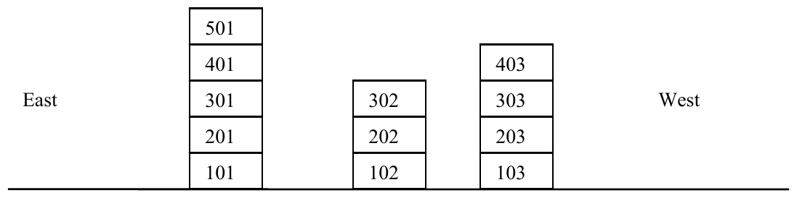

ICPC World Finals 2005 · Problem E
The Apartment Construction Management (ACM) has several new high-rise apartment buildings in suburban Shanghai. With the booming economy, ACM expects a considerable profit on apartment leases. Because their apartments receive more direct sunlight, the company claims that these are nicer than others in the area. No other buildings obstruct the sunlight path to apartments in ACM’s tall buildings.
ACM wants to verify this claim by telling potential residents exactly how much sunlight a given apartment receives. To offer customers a representative sample of sunlight hours, the company wants to advertise the sunlight hours for April 6, 2005. On that day in Shanghai, the sun rises at 5:37 am, and sets at 6:17 pm.

As shown above, apartments are in a series of buildings aligned east to west. The last two digits of the apartment number identify the building, starting with 01 for the east-most building. The other digits encode the apartment floor, with 1 as the ground floor.
The sun rises in the east and travels at a constant radial speed across the sky, until setting in the west. The only shadows are created by buildings (i.e. each building can cast a shadow on one or more other buildings). An apartment is considered to receive sunlight when either its eastern or western exterior wall is fully covered in sunlight or when the sun is directly overhead.
The input file contains a series of descriptions of apartment complexes. Each description starts with a line containing a single integer n (1 ≤ n < 100) that is the number of apartment buildings in the complex. The next line has two integers w, the width (in east-west direction), and h, each apartment’s height in meters. Next is a list of integers m(1), d(1), m(2), d(2), …, d(n-1), m(n), where m(i) is the number of apartments in apartment building i, and d(i) is the distance, in meters, between the apartment building i and apartment building i+1.
The apartment complex description is followed by an integer list of apartments to query for sunlight hours and is terminated by a zero. The input file is terminated by a line consisting of the integer zero.
For each apartment complex description, output its number in the sequence of descriptions. Then for each query, output the corresponding sunlight hours, using the 24-hour time format. Truncate all times down to the nearest second. If the query refers to an apartment that does not exist, indicate that the apartment does not exist. Follow the format shown in the sample output.
3 6 4 5 6 3 3 4 302 401 601 303 0 4 5 3 4 5 7 8 5 4 3 101 302 503 0 0
Apartment Complex: 1 Apartment 302: 10:04:50 - 13:23:47 Apartment 401: 05:37:00 - 17:13:57 Apartment 601: Does not exist Apartment 303: 09:21:19 - 18:17:00 Apartment Complex: 2 Apartment 101: 05:37:00 - 12:53:32 Apartment 302: 09:08:55 - 14:52:47 Apartment 503: 09:01:12 - 18:17:00